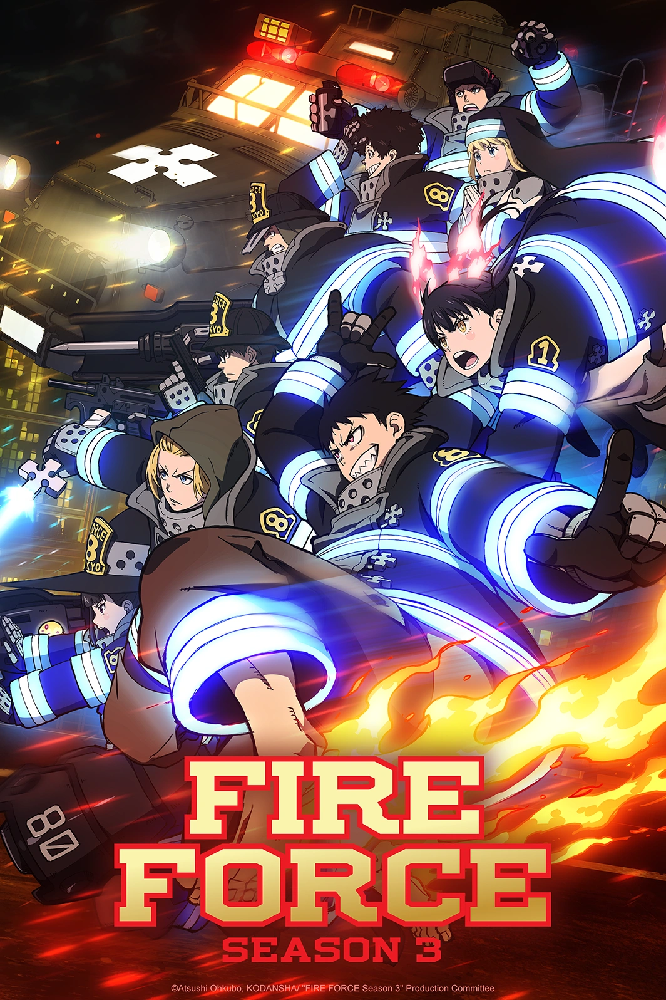

Fire Force

SINOPSE
- Fire Force (En'en no Shubou, ou En'en no Shouboutai) é uma série de anime e mangá criada por Atsushi Ōkubo, o mesmo autor de Soul Eater. A história se passa em um mundo onde a humanidade vive sob constante ameaça de incêndios espontâneos e misteriosos que transformam as pessoas em Infernals — seres flamejantes e destrutivos. Para lidar com essas ameaças, uma organização especial chamada Fire Force é formada, composta por unidades de bombeiros com habilidades extraordinárias para combater os Infernals e, ao mesmo tempo, investigar a causa dessas ocorrências sobrenaturais.